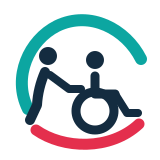
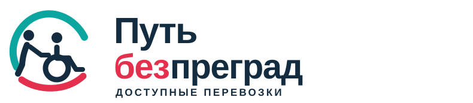
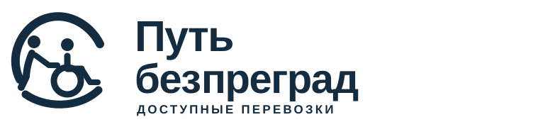
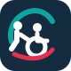

КОНЦЕПЦИЯ 01 • С сопровождением
Круг заботы
Сохраняем большой открытый круг, добавляем сопровождающего рядом с пассажиром. Читается как забота и безопасное перемещение.


Ближе к референсу
ОДНОЦВЕТНОЕ ИСПОЛНЕНИЕ

ФАВИКОН · 48 / 32 / 16
